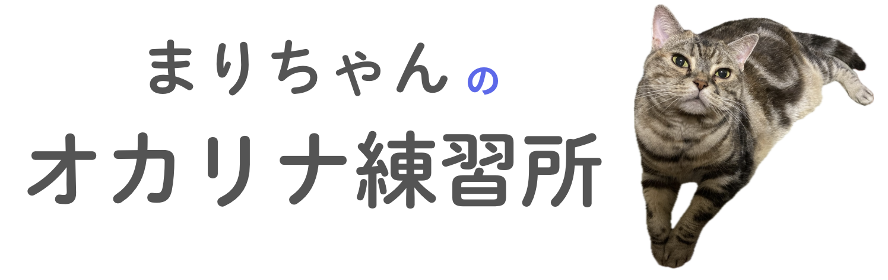

<header>
    <div class="container">
        <div class="logo-container">
            <a href="keyboard.html" aria-label="ホームページに戻る">
                
            </a>
        </div>
        
        <nav class="main-nav">
            <a href="/">運指一覧</a>
            <a href="http://127.0.0.1:5500/sequence.html?sequence=%E3%83%9F%E3%83%95%E3%82%A1%E3%82%BD%E3%83%89Hi%E3%82%BD%E3%83%89Hi%E3%82%BD%E3%83%89Hi%0A%E3%83%89Hi%E3%83%ACHi%E3%83%AC%E2%99%AFHi%E3%83%9FHi%E3%83%89Hi%E3%83%ACHi%E3%83%9FHi%E3%82%B7Hi%E3%83%ACHi%E3%83%89Hi%0A%E3%83%9F%E3%83%95%E3%82%A1%E3%82%BD%E3%83%89Hi%E3%82%BD%E3%83%89Hi%E3%82%BD%E3%83%89Hi%0A%E3%83%A9Hi%E3%82%BD%E3%83%95%E3%82%A1%E2%99%AF%E3%83%A9Hi%E3%83%89Hi%E3%83%9FHi%E3%83%ACHi%E3%83%89Hi%E3%83%A9Hi%E3%83%ACHi%0A%E3%83%9F%E3%83%95%E3%82%A1%E3%82%BD%E3%83%89Hi%E3%82%BD%E3%83%89Hi%E3%82%BD%E3%83%89Hi%0A%E3%83%89Hi%E3%83%ACHi%E3%83%AC%E2%99%AFHi%E3%83%9FHi%E3%83%89Hi%E3%83%ACHi%E3%83%9FHi%E3%82%B7Hi%E3%83%ACHi%E3%83%89Hi%0A%E3%83%89Hi%E3%83%ACHi%E3%83%9FHi%E3%83%89Hi%E3%83%ACHi%E3%83%9FHi%E3%83%89Hi%E3%83%ACHi%E3%83%89Hi%E3%83%9FHi%E3%83%89Hi%E3%83%ACHi%E3%83%9FHi%0A%E3%83%89Hi%E3%83%ACHi%E3%83%89Hi%E3%83%9FHi%E3%83%89Hi%E3%83%ACHi%E3%83%9FHi%E3%82%B7Hi%E3%83%ACHi%E3%83%89Hi">ドレミで入力</a>
            <a href="samples.html">サンプル曲</a>
        </nav>
    </div>
</header>